Versionskontrolle in ML-Projekten¶
Frank Hofmann
Cusy GmbH, Berlin
enterPy, 6. Mai 2021

Installation¶
$ pipenv install dvc[ssh]Extras¶
[ssh][s3][gs][azure][oss][all]
Projekt erstellen¶
$ mkdir -p dvc-example/data
$ cd dvc-example
$ git init
$ dvc init
$ git add .dvc
$ git commit -m "Initialise DVC"
dvc init- erstellt ein Verzeichnis
.dvc/mitconfig,.gitignoreundcache-Verzeichnis. git commit- stellt
.dvc/configund.dvc/.gitignoreunter Git-Versionskontrolle.
DVC konfigurieren¶
Bevor DVC verwendet wird, sollte noch ein entfernter Speicherplatz (remote storage) eingerichtet werden, z.B. ein NFS-Mount.
$ sudo mkdir -p /var/dvc-storage
$ dvc remote add -d local /var/dvc-storage
Setting 'local' as a default remote.
$ git commit .dvc/config -m "Configure local remote"
[master efaeb84] Configure local remote
1 file changed, 4 insertions(+)
-d, --default- Standardwert für den entfernten Speicherplatz
local- Name des entfernten Speicherplatz
/var/dvc-storage- URL des entfernten Speicherplatzes
Daneben werden noch weitere Protokolle unterstützt, die dem Pfad vorangestellt werden, u.a. ssh:, hdfs:, https:.
So kann beispielsweise einfach ein weterer entfernter Datenspeicher hinzugefügt werden mit:
$ dvc remote add webserver https://dvc.cusy.io/myproject
Die zugehörige Konfigurationsdatei .dvc/config sieht dann so aus:
['remote "local"']
url = /var/dvc-storage
[core]
remote = local
['remote "webserver"']
url = https://dvc.cusy.io/myproject
Daten hinzufügen¶
$ dvc get https://github.com/iterative/dataset-registry get-started/data.xml \
-o data/data.xml
$ dvc add data/data.xml
- Dies fügt die Datei
data/data.xmlindata/.gitignorehinzu - Die Meta-Angaben werden in
data/data.xml.dvcgeschrieben.
Weitere Informationen zum Dateiformat der *.dvc-Datei erhaltet ihr unter DVC-File Format.
In Git werden für die verschiedene Versionen eurer Projektdaten verwaltet indem Ihr die CVS-Datei hinzufügt:
$ git add data/.gitignore data/fortune500.csv.dvc
$ git commit -m "Add raw data to project"
Daten speichern und abrufen¶
Die Daten können vom Arbeitsverzeichnis eures Git-Repository auf den entfernten Speicherplatz kopiert werden mit
$ dvc push
Falls ihr aktuellere Daten abrufen wollt, könnt ihr dies mit
$ dvc pull
Importieren und Aktualisieren¶
dvc import¶
Beispiel
$ dvc import https://github.com/iterative/dataset-registry get-started/data.xml
Importing 'get-started/data.xml (https://github.com/iterative/dataset-registry)' -> 'data.xml'
- Dies lädt die Datei aus der dataset-registry in das aktuelle Arbeitsverzeichnis
- fügt sie der
.gitignore-Datei hinzu - erstellt die Datei
data.xml.dvc
dvc update¶
Beispiel
$ dvc update data.xml.dvc
Stage 'data.xml.dvc' didn't change.
Saving information to 'data.xml.dvc'.
Big Picture¶
Big Picture¶
Big Picture¶
Big Picture¶
Big Picture¶
Big Picture¶
Pipelines¶
dvc run erstellt Verarbeitungsstufen.
Jede Stufe ist gekennzeichnet durch
- eine, mit Git verwaltete, Quellcode-Datei
- weitere Abhängigkeiten
- Ausgabedaten
Alle Stufen zusammen bilden die DVC-Pipeline.
Beispiel¶
1. Phase: Aufteilen in Trainings- und Testdaten¶
$ dvc run -n split -d src/split.py -d data/data.xml -o data/splitted \
python src/split.py data/data.xml
-n- gibt den Namen der Verarbeitungsstufe an.
-d- gibt Abhängigkeiten (dependencies) für das reproduzierbare Kommando an.
Wenn zum Reproduzieren der Ergebnisse beim nächsten Maldvc repoaufgerufen wird, überprüft DVC diese Abhängigkeiten und entscheidet, ob diese auf dem aktuellen Stand sond oder erneut ausgeführt werden müssen um aktuellere Ergebnisse zu erhalten.
-o- gibt die Ausgabedatei oder das Ausgabeverzeichnis an.
Der Arbeitsbereich hat sich nun geändert in:
.
├── data
│ ├── data.xml
│ ├── data.xml.dvc
+ │ └── splitted
+ │ ├── test.tsv
+ │ └── train.tsv
+ ├── dvc.lock
+ ├── dvc.yaml
├── requirements.txt
└── src
└── split.py
Die generierte dvc.yaml-Datei sieht dann folgendermaßen aus:
stages:
split:
cmd: pipenv run python src/split.py data/data.xml
deps:
- data/data.xml
- src/split.py
outs:
- data/splitted
Da die Daten im Ausgabeverzeichnis nie mit Git versioniert werden sollten, hat dvc run bereits die data/.gitignore-Datei geschrieben:
/data.xml
+ /splitted
Anschließend müssen die geänderten Daten nur noch in Git bzw. DVC übernommen werden:
$ git add data/.gitignore dvc.yaml
$ git commit -m "Create split stage"
$ dvc push
Werden nun mehrere Phasen mit dvc run erstellt, wobei die Ausgabe eines Kommandos als Abhängigkeit eines anderen angegeben wird, entsteht eine DVC Pipeline.
2. Phase: Parametrisierung¶
params.yaml mit folgendem Inhalt:
max_features: 6000
ngram_range:
lo: 1
hi: 2
dvc run mit -p <filename>:<params_list> liest die Parameter, in unserem Beispiel:
$ dvc run -n featurize -d src/featurization.py -d data/splitted \
-p params.yaml:max_features,ngram_range.lo,ngram_range.hi -o data/features \
python src/featurization.py data/splitted data/features
Dies ergänzt die dvc.yaml-Datei um den featurize-Abschnitt:
featurize:
cmd: python src/featurization.py data/splitted data/features
deps:
- data/splitted
- src/featurization.py
params:
- max_features
- ngram_range.lo
- ngram_range.hi
outs:
- data/features
Damit diese Phase wiederholt werden kann, werden die MD5-Hashwerte und Parameterwerte in der dvc.lock-Datei gespeichert:
featurize:
cmd: python src/featurization.py data/splitted data/features
deps:
- path: data/splitted
md5: 1ce9051bf386e57c03fe779d476d93e7.dir
- path: src/featurization.py
md5: a56570e715e39134adb4fdc779296373
params:
params.yaml:
max_features: 1000
ngram_range.hi: 2
ngram_range.lo: 1
Schließlich müssen noch die folgenden Dateien im Git-Repository aktualisiert werden:
dvc.lockdvc.yamldata/.gitignore
$ git add dvc.lock dvc.yaml data/.gitignore
3. Phase: Evaluation¶
dvc-example/src/evaluate.py berechnet den Wert für die Fläche unter der Kurve (engl.: AUC (Area Under the Curve).
Dabei verwendet es den Testdatensatz, ließt die Features aus features/test.pkl und erstellt die Metrikdatei auc.metric.
auc.metric kann DVC als Metrik mit der -M-Option von dvc run kenntlich gemacht werden:
$ dvc run -n evaluate -d src/evaluate.py -d model.pkl -d data/features \
-M auc.json python src/evaluate.py model.pkl data/features auc.json
Dies erweitert die /dvc.yaml-Datei um den evaluate-Abschnitt:
evaluate:
cmd: python src/evaluate.py model.pkl data/features auc.json
deps:
- data/features
- model.pkl
- src/evaluate.py
metrics:
- auc.json:
cache: false
Versuchsmetriken¶
Mit dvc metrics show lassen sich Experimente über verschiedene Branches und Tags hinweg vergleichen:
$ dvc metrics show
auc.json: 0.514172
Die DVC-Pipeline kann nun zusammen mit einem Tag dem Git-Repository hinzugefügt werden:
$ git add dvc.yaml dvc.lock auc.json
$ git commit -m 'Add stage ‹evaluate›'
$ git tag -a 0.1.0 -m "Initial pipeline version 0.1.0"
Pipelines anzeigen¶
$ dvc dag
+-------------------+
| data/data.xml.dvc |
+-------------------+
*
*
*
+-------+
| split |
+-------+
*
*
*
+-----------+
| featurize |
+-----------+
** **
** *
* **
+-------+ *
| train | **
+-------+ *
** **
** **
* *
+----------+
| evaluate |
+----------+
data/data.xml.dvc
prepare.dvc
featurize.dvc
train.dvc
evaluate.dvc
dvc dag --dot generiert eine Graphviz-.dot-Datei, die dann z.B. als SVG-Datei gerendert werden kann:

Ergebnisse reproduzieren¶
1. Code und Daten wiederherstellen¶
$ git clone https://github.com/veit/dvc-example.git
$ cd dvc-example
$ dvc pull -TR
A data/data.xml
1 file added
$ ls data/
data.xml data.xml.dvc
2. Ergebnisse reproduzieren¶
$ dvc repro
Verifying data sources in stage: 'data/data.xml.dvc'
Stage 'split' didn't change, skipping
Stage 'featurize' didn't change, skipping
Stage 'train' didn't change, skipping
Stage 'evaluate' didn't change, skipping
3. Parametrisieren¶
Die Parameter in der params.yaml-Datei können geändert und anschließend die Pipeline erneut durchlaufen werden:
$ dvc repro
Stage 'data/data.xml.dvc' didn't change, skipping
Stage 'split' didn't change, skipping
Running stage 'featurize' with command:
python src/featurization.py data/splitted data/features
…
Stage 'train' didn't change, skipping
Stage 'evaluate' didn't change, skipping
To track the changes with git, run:
git add dvc.lock
Die Änderung der Parameter hatte keinen Einfluss auf das Ergebnis.
DVC erkennt Änderungen an Abhängigkeiten und Ausgaben über die md5-Hashwerte, die in der dvc.lock-Datei gespeichert sind.